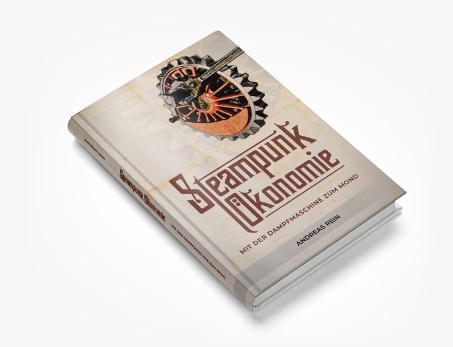

Buch · tredition
Steampunk Ökonomie
Mit der Dampfmaschine zum Mond
Steampunk Ökonomie nenne ich den Versuch, komplexe unternehmerische Herausforderungen mit den wirtschaftswissenschaftlichen Instrumenten des vergangenen Jahrhunderts zu lösen. Agile Führung heißt, diese Steampunk Ökonomie zu überwinden.
Moderne Arbeitsweisen und Denkmodelle wie Flight Levels, Relationship Intelligence und Kanban helfen dabei, wandlungs- und leistungsfähige Organisationen zu gestalten.
Buch bestellen ↗